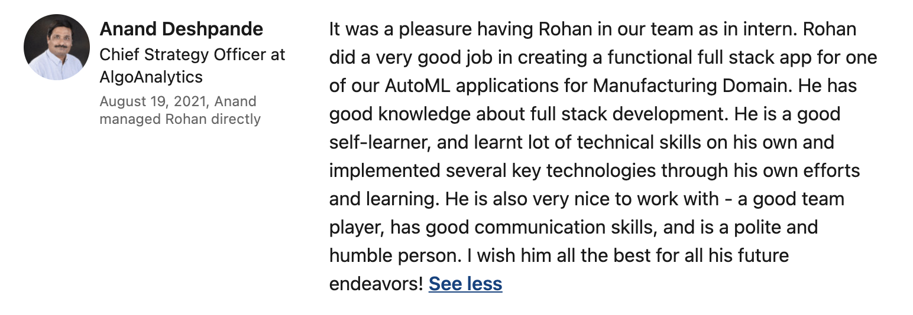

I started my internship as a Full Stack Web Developer at Asquared IoT on the 1st of January, 2021. Dr Anand Deshpande, the CEO of Asqaured Iot and CSO of
AlgoAnalytics was kind enough to give me a six months internship at his startup.
The Internship
Although the startup was based in Pune, due to the rampant spread of COVID-19, I was give the option to work from home. I was a part of the AutoML team, consisting of three other members, who were tasked
to build a full stack web app around a video analysis code, that implemented anomaly detection. This app was to cater the manufacturing industries to check defects or orientation anomalies in products
on conveyor belts and detect security anomalies in CCTV footage.
My teammates Anish and Prabhanjan were both Data Scientist, and me being a callow undergrad, knew the technologies to be implemented, but never had real-world experience when it came to building or
deploying an app for production. This was both nerve-wrecking and exhilarating, but in the end, we were successful in building and deploying the app.
Work
On the very first day, we had a quick introduction meet and a session on how the video analysis code worked. Later we brainstormed the structure and the layout of the app, and its aesthetics.
It was decided that we were to implement Flask and its offered full suite of packages.
I first built the frontend using Jinja Template Engine 2.0 and Bootstrap 5. This included the landing page, login/signup page, dashboard, new project, view existing projects, log-out and many more.
As much as I am tempted to show-off the screenshots, I will not be posting it here due to company policies.
The backend was a video analysis code as mentioned above, that used a deep learning techique called anomaly detection. The user was to add the desired video to be trained into a folder called “Input Videos”,
and when the training commences, the frames woild be outputted to the “training” and “validation” folders. The existing code had fixed parameter for epochs, fps, etc, which were tobe made hyperparameters. As
there were quite a few tweeks to be done to the existing ML code, I took up the infamous "Machine Learning" course by Andrew NG on coursera, along with a few tensorflow tutorials to understand the technicalities of the code.
Shortly after, I proceeded to work on storing the information into a database. It was discussed that SQLite3 was to be implemented. The Flask-SQLAlchemy ORM ensured steady connection between Flask and the database. Three tables
were created namely Users, Projects and Jobs. Users table contained fields like username, email, password, etc; while the Projects table contained project information like name, description, video upload field, etc
and hyperparameters like Epochs, GPU use, etc that could be set by the users as per their convinence for training the video. I will be describing the significance of the Jobs table in the coming paragraph.
Redis was the weapon of choice to run the heavy, time-consuming tasks in the background. Redis was the message broker and redis queues was used to queue jobs, thus allowing the task to run asynchronously.
To know the current job runnning in the background, I stored the job ID of the Redis Queue register into the Jobs table. The Jobs table contained the job ID, user and project IDs served as the foriegn keys
and a job-status column, which enable the user to start, stop, resume and delete the task, while deplaying the epochs completed on the UI.
When it came to the file structuring, I spawn directories everytime a user or a project was created. I made a 1-N mapping for Users to Projects, ie, one user directory can have multiple project directories spawned.
Each project directory had its own “Input Videos” directory, for storing the input video and training and validation frames.
For deployment, I dockerised the whole app. But later it was decided that I was to deploy it on the company servers. You can find the code here.
(I usually keep this repo private, only make it public when needed.)
Experience
I mostly had all positive experiences during my stay. Dr Anand and my teammates were extremely amiable and informative. The environment was pretty intense initially. As an intern, I was expecting to work under a experienced
supervisor, but the senior architect of the team quit mid-way through the project. This was a boon in dusguise, albiet a heavy load on my shoulder. I learnt top-notch modern technologies all by myself, and can proudly say my
team was able to build a production style full stack app, which is now being used by the companies clientele.
Conclusion
My internship ended on the 30rd of June, 2021 and much to my delight I was offered a full time role at AlgoAnalytics as an associate data scientist. In the end, I would like to thank Dr Anand for giving me this opportunity to work at
one of his burgeoning startups.

Dr Anand's Recommendation on my Linkedin!
It was an intense learning experience, from learning state of the art techologies like Redis, Flask, Bootstrap, Jinja Template Engine and tensorflow to learning soft skills such as effective
communication and valuing my peers time as much as mine. Diamonds are made under pressure. Not that I compare myself to a diamond, but this experience helped me grow, technically and personally. Being my first ever forey
into the corporate world, it was nice to see my hard work being appreciated.